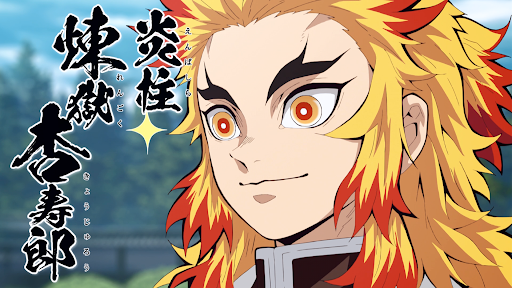
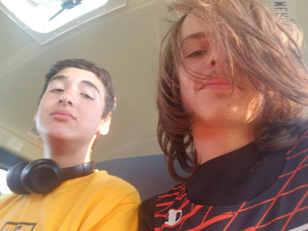
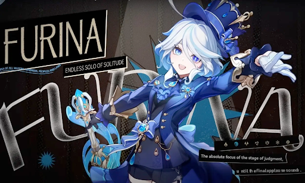
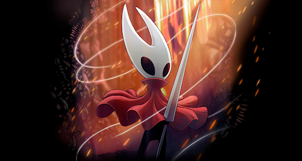

Home
My Google Link
About Me
Wednesday Motes
About Me: Ryan Vile
REPLACE THIS PARAGRAPH - Create 3 paragraphs about yourself. Use the Introduction slideshows you created last week.
The Basics
I'm a 16 year old Potsdam High School student who was born on July 29th. I was born in Potsdam and have lived their all my life. I live with my mom and twin sister, but also have a younger sister and an older sister.
Hobbie and Intrests
I am a gamer and a weeb who likes to run.
- I play gacha games
- Genshin Impact
- Wuthering Waves
- Silksong
- Pokemon
- Outcome Memories
My favorite Pokemon line is the Zorua and Zoroark line (both the hisuian and regular versions). My favorite Genshin character is Furina (I'm actually top 3% in the world), and my favorite Wuthering Waves character is Phrolova. My favorite Silksong character is Lace. For anime I like Demon Slayer, Blue Box, Witch Watch, Frieren, Jujutsu Kaisen, and the Fate series. My favorite anime characters include Rengoku, Frieren, Rin Tohsaka, Megumi, Hina Chono, and Keigo. I participate in cross country and track. I'm better at sprints and my best event is the 400 meter run.
   
Goals and Future Plans
My goals include passing all my classes and learning how to code. My future plans include learning how to program a game and becoming a game developer.
- 2 - 3 Images from your slideshow
- Some text formatting tags
- Add at least 1 list